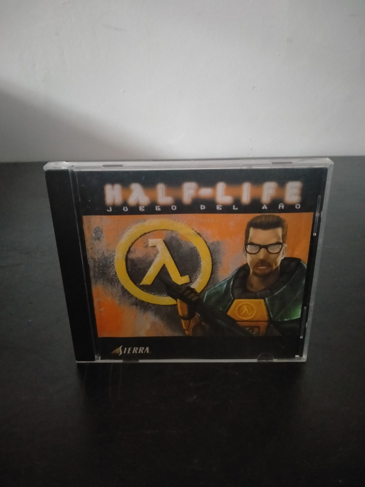

Ficha #000000
Half-Life: Juego del Año
Edición Juego del Año de Half-Life, el influyente shooter en primera persona desarrollado por Valve y publicado originalmente en 1998. El jugador encarna al físico Gordon Freeman durante una catástrofe científica en el complejo de investigación Black Mesa, donde un experimento abre una brecha hacia una dimensión alienígena. El título transformó el género mediante una narración integrada en la acción, secuencias desarrolladas sin abandonar la perspectiva del protagonista, inteligencia artificial avanzada para su época y una combinación continua de combate, exploración y puzles ambientales. Utiliza el motor GoldSrc, derivado y profundamente modificado a partir de tecnología de Quake. Su éxito impulsó una extensa comunidad de modificaciones y dio origen a proyectos fundamentales para la historia del videojuego en PC, entre ellos Counter-Strike. Esta reedición europea en caja jewel case pertenece a la línea comercial que destacaba sus numerosos reconocimientos como Juego del Año.
- Formato
- Jewel Case
- Plataforma
- Win95 Win98 WinNT
- Género
- Shooter en primera persona Acción Ciencia ficción Terror
- Serie
- Todos Jewel Case
- Desarrollador
- Valve
- Distribuidor
- Sierra Studios
- EAN
- —
Contenido de la edición
- CD-ROM en caja jewel case
Preservación
- Protección
- Código o clave
- Formato recomendado
- BIN/CUE
- Jugable en virtualización
- Sí
Preservar el CD-ROM mediante una imagen completa y documentar la clave de producto asociada a la edición, necesaria para la instalación original. Conviene conservar también la estructura de pistas y los metadatos del soporte físico. La ejecución virtual es viable mediante un entorno Windows clásico compatible, manteniendo disponible la imagen del disco cuando sea requerida.